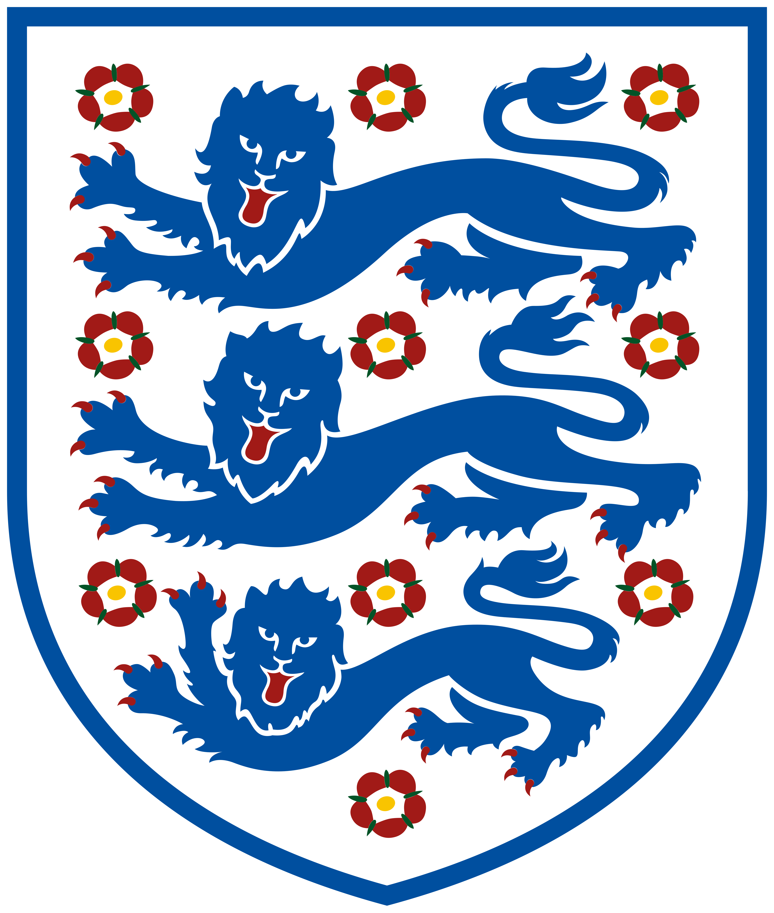
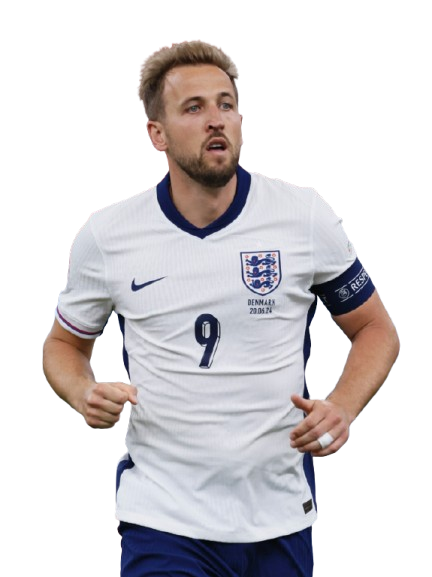

A seleção inglesa de futebol representa a Inglaterra no futebol internacional masculino desde a primeira partida internacional em 1872. Ela é controlada pela Football Association (FA), o órgão regulador do futebol na Inglaterra , que é afiliado à UEFA e está sob a jurisdição global da FIFA, órgão regulador do futebol mundial . [ 3 ] [ 4 ] A Inglaterra compete nos três principais torneios internacionais disputados por nações europeias: a Copa do Mundo da FIFA , o Campeonato Europeu da UEFA e a Liga das Nações da UEFA . A Inglaterra é a seleção nacional de futebol mais antiga do mundo, tendo disputado a primeira partida internacional de futebol em 1872, contra a Escócia . O estádio da Inglaterra é o Estádio de Wembley , em Londres, e seu centro de treinamento fica em St George's Park , em Burton upon Trent. Thomas Tuchel é o atual treinador. [ 5 ] A Inglaterra venceu a final da Copa do Mundo FIFA de 1966 em casa, tornando-se uma das oito nações a conquistar o título mundial. Classificou-se para a Copa do Mundo dezessete vezes, terminando em quarto lugar nas edições de 1990 e 2018. A Inglaterra nunca venceu o Campeonato Europeu, tendo como melhores resultados os vice-campeonatos em 2020 e 2024. Como país constituinte do Reino Unido , a Inglaterra não é membro do Comitê Olímpico Internacional (já que os atletas ingleses competem pela Grã-Bretanha ) e, portanto, não participa dos Jogos Olímpicos . A Inglaterra é a única seleção a ter vencido a Copa do Mundo em nível profissional, mas não um título continental importante em seu país, e a única seleção representando um país não soberano a ter conquistado a Copa do Mundo.
